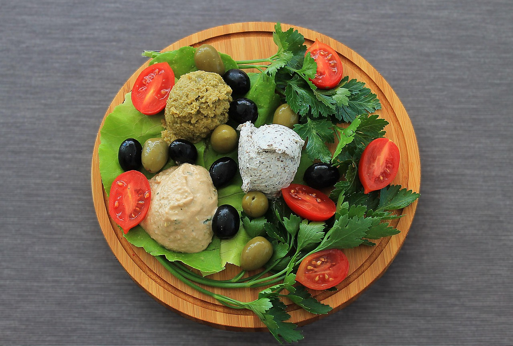

Why Healthy Eating Matters
Brief, human-friendly explanation about how healthy eating affects energy, mood, and overall health.
Understanding a Balanced Diet
Macronutrients Explained
Macronutrients are the nutrients your body needs in large amounts to function properly:
-
Proteins: Help build and repair body tissues, support muscle growth, and maintain immune health.
-
Carbohydrates: The body’s main source of energy, found in foods like whole grains, fruits, and vegetables.
-
Fats: Provide long-term energy, protect organs, and help absorb fat-soluble vitamins such as A, D, E, and K.
Micronutrients You Need
Micronutrients are essential in smaller amounts but are just as important for health. Here are key ones and their benefits:
- Vitamin A: Supports vision and immune function.
- Vitamin C: Boosts immunity and aids in collagen production.
- Vitamin D: Helps maintain healthy bones and supports calcium absorption.
- Calcium: Strengthens bones and teeth.
- Iron: Carries oxygen in the blood and supports energy levels.
- Potassium: Helps regulate blood pressure and muscle function.
5 Simple Tips for Eating Healthier
- Plan your meals in advance.
- Include more vegetables in every meal.
- Drink enough water daily.
- Limit processed foods.
- Practice portion control